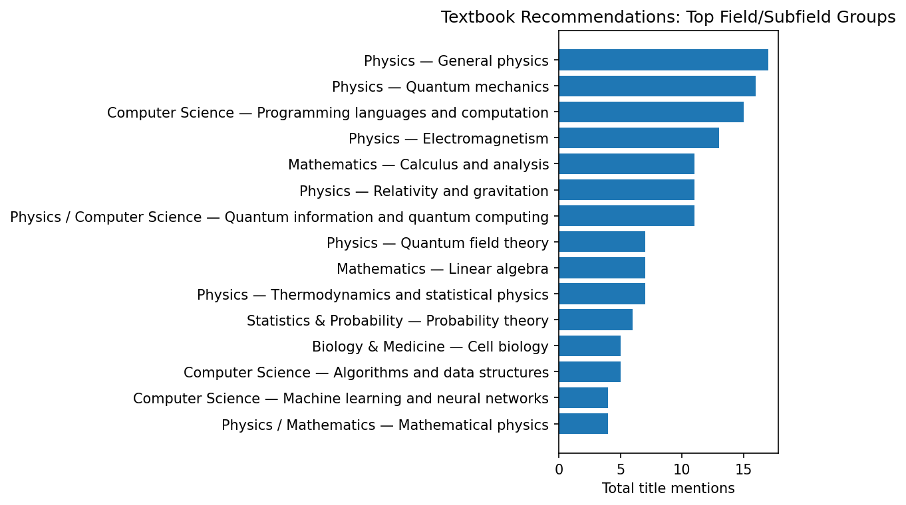

Textbook Recommendation Counts
Motivation and context
This compilation is based on responses to an X thread started by Michael Nielsen asking people to share the most wonderful textbook they had ever read. Because the source is an informal social-media thread, the results should be interpreted as a reflection of that particular audience rather than as a representative survey of textbook recommendations across all disciplines.
From a quick overview, the counts appear naturally weighted toward fields that are especially prominent among Michael Nielsen’s readership and in the initial examples he mentioned, such as physics, mathematics, and computer science. Social sciences, including economics and psychology, appear less frequently, while humanities-oriented areas such as literature, music, and art are represented more sparsely. Even with that caveat, it is a very rich and valuable compilation! :-)
Source
- Source document: https://github.com/JaumeAmoresDS/home/blob/main/posts/others/textbook-recommendations.md
- Generated from a best-effort normalized extraction of book-title mentions in the Markdown source.
- Obvious aliases were consolidated, for example
SICP→Structure and Interpretation of Computer Programs,QCQI→Quantum Computation and Quantum Information, andMTW/MWT→Gravitation. - Link-preview duplicates that repeated a title in the source text were counted as textual occurrences.
- Broad or vague references such as “this book” were omitted unless the referenced title or alias was clear.
Prompt Used for the Counting Task
Count the occurrences of each book title in the document below and provide the final aggregate counts:
https://github.com/JaumeAmoresDS/home/blob/main/posts/others/textbook-recommendations.mdCurrent Prompt
write a markdown document, in english, where you include the prompt i gave you (without the splitting or subagent instructions since it seems it wasn't really necessary), and with the result as a table. Include a small graph in png of counts grouped by fields (physics, CS, etc., and subfields (quantum mechanics, etc.). include the current prompt as wellSummary Graph

The graph groups normalized title counts by broad field and subfield. Interdisciplinary titles are assigned to the most natural combined field label.
Field/Subfield Aggregate Counts
| Field | Subfield | Total mentions |
|---|---|---|
| Physics | General physics | 17 |
| Physics | Quantum mechanics | 16 |
| Computer Science | Programming languages and computation | 15 |
| Physics | Electromagnetism | 13 |
| Mathematics | Calculus and analysis | 11 |
| Physics | Relativity and gravitation | 11 |
| Physics / Computer Science | Quantum information and quantum computing | 11 |
| Mathematics | Linear algebra | 7 |
| Physics | Quantum field theory | 7 |
| Physics | Thermodynamics and statistical physics | 7 |
| Statistics & Probability | Probability theory | 6 |
| Biology & Medicine | Cell biology | 5 |
| Computer Science | Algorithms and data structures | 5 |
| Computer Science | Machine learning and neural networks | 4 |
| Mathematics | Algebra | 4 |
| Mathematics | Complex analysis | 4 |
| Mathematics | Differential geometry | 4 |
| Physics / Mathematics | Mathematical physics | 4 |
| Computer Science / Statistics | Information theory and machine learning | 3 |
| Mathematics | Differential equations | 3 |
| Mathematics | General mathematics | 3 |
| Mathematics / Physics | Dynamical systems | 3 |
| Arts & Design | Music theory | 2 |
| Biology & Medicine | Immunology | 2 |
| Biology & Medicine | Protein structure | 2 |
| Chemistry | General chemistry | 2 |
| Chemistry | Organic chemistry | 2 |
| Computer Science | Compilers and programming languages | 2 |
| Computer Science | Security and cryptography | 2 |
| Computer Science | Theory of computation | 2 |
| Engineering & Operations | Manufacturing and operations | 2 |
| Humanities & Social Science | Nature writing and culture | 2 |
| Mathematics | Number theory | 2 |
| Mathematics | Topology | 2 |
| Mathematics / Computer Science | Discrete mathematics | 2 |
| Mathematics / Philosophy | Logic | 2 |
| Physics | Classical mechanics | 2 |
| Physics | Condensed matter physics | 2 |
| Physics | Field theory and relativity | 2 |
| Physics | Many-body physics | 2 |
| Physics | Physics anthology/history | 2 |
| Physics | Quantum foundations | 2 |
| Physics | Statistical physics | 2 |
| Physics | Theoretical physics | 2 |
| Physics / Astronomy | Astronomy and astrophysics | 2 |
| Physics / Mathematics | Classical mechanics | 2 |
| Statistics & Probability | Bayesian statistics | 2 |
| Arts & Design | Architecture and design | 1 |
| Arts & Design | Art history | 1 |
| Arts & Design | Drawing | 1 |
| Arts & Design | Game design | 1 |
| Biology & Medicine | Biochemistry | 1 |
| Biology & Medicine | Biophysics | 1 |
| Biology & Medicine | Developmental biology | 1 |
| Biology & Medicine | Epidemiology | 1 |
| Biology & Medicine | Evolutionary biology | 1 |
| Biology & Medicine | General biology | 1 |
| Biology & Medicine | Nutrition and neuroscience | 1 |
| Biology & Medicine | Plant physiology | 1 |
| Biology & Medicine | Protein physics | 1 |
| Business & Management | Management | 1 |
| Chemistry | Electrochemistry | 1 |
| Chemistry / Mathematics | Molecular science | 1 |
| Chemistry / Physics | Quantum chemistry | 1 |
| Computer Science | Artificial intelligence | 1 |
| Computer Science | Computer systems | 1 |
| Computer Science | Distributed systems and databases | 1 |
| Computer Science | Evolutionary computation | 1 |
| Computer Science | Linear algebra and computing | 1 |
| Computer Science | Low-level programming | 1 |
| Computer Science | Networks and systems | 1 |
| Computer Science | Operating systems | 1 |
| Computer Science | Reinforcement learning | 1 |
| Computer Science / Graphics | Computer graphics | 1 |
| Computer Science / Network Science | Networks | 1 |
| Earth & Environmental Science | Geology and tectonics | 1 |
| Earth & Environmental Science | Meteorology and nature writing | 1 |
| Economics | Economic theory | 1 |
| Economics | International economics | 1 |
| Economics | Microeconomics | 1 |
| Economics / Mathematics | Game theory | 1 |
| Engineering & Operations | Dynamical systems | 1 |
| Engineering & Operations | Electronics | 1 |
| Engineering & Operations | Rocketry | 1 |
| Engineering & Operations | Signals and systems | 1 |
| Engineering & Operations | Simulation | 1 |
| Engineering & Operations | Technology and mechanics | 1 |
| Humanities & Social Science | History and civilization | 1 |
| Humanities & Social Science | Memoir | 1 |
| Literature | Fiction | 1 |
| Literature | Fiction / intellectual history | 1 |
| Mathematics | Algebra and representation theory | 1 |
| Mathematics | Algebraic geometry | 1 |
| Mathematics | Analysis and transforms | 1 |
| Mathematics | Category theory | 1 |
| Mathematics | Combinatorics | 1 |
| Mathematics | Geometry and measure theory | 1 |
| Mathematics | Geometry and trigonometry | 1 |
| Mathematics | Lie theory | 1 |
| Mathematics | Number theory and algebraic geometry | 1 |
| Mathematics | Partial differential equations | 1 |
| Mathematics | Set theory and logic | 1 |
| Mathematics / Computer Science | Algebra and CS | 1 |
| Mathematics / Computer Science | Cryptography | 1 |
| Mathematics / Engineering | Optimization | 1 |
| Mathematics / Philosophy | Logic and foundations | 1 |
| Mathematics / Physics | Mathematical methods | 1 |
| Mathematics / Physics | Vector calculus | 1 |
| Philosophy | Ethics | 1 |
| Philosophy / Religion | Religion and apologetics | 1 |
| Physics | Acoustics | 1 |
| Physics | Atomic physics | 1 |
| Physics | Condensed matter / matter structure | 1 |
| Physics | Mathematical physics and cosmology | 1 |
| Physics | Modern physics | 1 |
| Physics | Optics | 1 |
| Physics | Quantum physics | 1 |
| Physics | Relativity and quantum theory | 1 |
| Physics / Astronomy | Astronomy history | 1 |
| Physics / Astronomy | Cosmology | 1 |
| Physics / Biology | Biophysics and vision | 1 |
| Physics / Mathematics | Gauge theory and geometry | 1 |
| Physics / Mathematics | Particle physics and algebra | 1 |
| Political Science | Democracy and politics | 1 |
| Psychology / Decision Science | Decision science | 1 |
| Statistics & Probability | Causality | 1 |
| Statistics & Probability | Monte Carlo methods | 1 |
| Statistics & Probability | Reliability statistics | 1 |
| Statistics & Probability | Statistical inference | 1 |
| Statistics & Probability | Statistical learning | 1 |
| Statistics & Probability / Mathematics | Stochastic calculus | 1 |
| Writing & Language | Semantics | 1 |
| Writing & Language | Writing | 1 |
Full Normalized Title Counts
| Title | Count | Field | Subfield | Notes / aliases |
|---|---|---|---|---|
| Quantum Computation and Quantum Information | 11 | Physics / Computer Science | Quantum information and quantum computing | Includes QCQI and ‘Quantum Computing by Mike and Ike’. |
| The Feynman Lectures on Physics | 11 | Physics | General physics | Includes variants such as Feynman lectures / Feynman’s lectures in physics. |
| Structure and Interpretation of Computer Programs | 9 | Computer Science | Programming languages and computation | Includes SICP and wizard-book references. |
| Electricity and Magnetism — Purcell | 6 | Physics | Electromagnetism | Includes Purcell E&M and Berkeley-series references. |
| Introduction to Electrodynamics — Griffiths | 5 | Physics | Electromagnetism | Includes ‘David Griffiths on electromagnetism’ and Griffiths electrodynamics variants. |
| Probability Theory: The Logic of Science — Jaynes | 4 | Statistics & Probability | Probability theory | Includes Jaynes Probability Theory variants. |
| The Molecular Biology of the Cell | 4 | Biology & Medicine | Cell biology | Includes MBOC and Alberts references. |
| The Principles of Quantum Mechanics — Dirac | 4 | Physics | Quantum mechanics | Includes POQM and Dirac variants. |
| An Introduction to Thermal Physics — Schroeder | 3 | Physics | Thermodynamics and statistical physics | Includes Schroeder on thermal physics. |
| Calculus — Spivak | 3 | Mathematics | Calculus and analysis | Includes Spivak’s Calculus. |
| Fundamentals of Physics / Physics — Halliday, Resnick, Walker | 3 | Physics | General physics | Includes Halliday & Resnick and Fundamentals of Physics variants. |
| Gravitation — Misner, Thorne, Wheeler / MTW | 3 | Physics | Relativity and gravitation | Includes MTW/MWT variants. |
| Information Theory, Inference, and Learning Algorithms | 3 | Computer Science / Statistics | Information theory and machine learning | David J. C. MacKay. |
| Introduction to Quantum Mechanics — Griffiths | 3 | Physics | Quantum mechanics | Griffiths QM variants. |
| Linear Algebra Done Right | 3 | Mathematics | Linear algebra | Sheldon Axler. |
| Nonlinear Dynamics and Chaos | 3 | Mathematics / Physics | Dynamical systems | Steven Strogatz. |
| Spacetime Physics | 3 | Physics | Relativity and gravitation | Taylor and Wheeler. |
| The Little Schemer | 3 | Computer Science | Programming languages and computation | Includes lower-case variants. |
| Thermal Physics — Kittel and Kroemer | 3 | Physics | Thermodynamics and statistical physics | Kittel/Kroemer. |
| Understanding Analysis | 3 | Mathematics | Calculus and analysis | Includes repeated link-preview title occurrences. |
| Classical Theory of Fields — Landau & Lifshitz | 2 | Physics | Field theory and relativity | |
| Compilers / Dragon Book | 2 | Computer Science | Compilers and programming languages | Aho, Lam, Sethi, Ullman. |
| Complex Variables and Applications | 2 | Mathematics | Complex analysis | Brown and Churchill. |
| Essentials of Discrete Mathematics | 2 | Mathematics / Computer Science | Discrete mathematics | David Hunter; includes link-preview duplicate. |
| Factory Physics | 2 | Engineering & Operations | Manufacturing and operations | |
| Introduction to Proteins: Structure, Function, and Motion | 2 | Biology & Medicine | Protein structure | Includes link-preview duplicate. |
| Linear Algebra — Gilbert Strang | 2 | Mathematics | Linear algebra | |
| Mathematical Methods of Classical Mechanics — Arnold | 2 | Physics / Mathematics | Classical mechanics | |
| Mathematical Omnibus | 2 | Mathematics | General mathematics | Includes link-preview duplicate. |
| Modern Quantum Mechanics — Sakurai | 2 | Physics | Quantum mechanics | Includes Sakurai variants. |
| Neural Networks and Deep Learning | 2 | Computer Science | Machine learning and neural networks | |
| On Trails | 2 | Humanities & Social Science | Nature writing and culture | Includes referenced post and title. |
| Ordinary Differential Equations — Arnold | 2 | Mathematics | Differential equations | |
| PCT, Spin and Statistics, and All That | 2 | Physics | Quantum field theory | Includes link-preview title duplicate. |
| Quantum Mechanics — Cohen-Tannoudji | 2 | Physics | Quantum mechanics | |
| Quantum Theory: Concepts and Methods — Peres | 2 | Physics | Quantum foundations | Asher Peres. |
| Statistical Rethinking | 2 | Statistics & Probability | Bayesian statistics | Richard McElreath. |
| The Physical Universe: An Introduction to Astronomy | 2 | Physics / Astronomy | Astronomy and astrophysics | Includes link-preview title duplicate. |
| The Quantum Theory of Fields — Weinberg | 2 | Physics | Quantum field theory | |
| The World of Physics | 2 | Physics | Physics anthology/history | Includes shortened link-preview duplicate. |
| Visual Complex Analysis | 2 | Mathematics | Complex analysis | Needham. |
| Visual Differential Geometry / Visual Differential Geometry and Forms | 2 | Mathematics | Differential geometry | Needham. |
| A First Course in General Relativity | 1 | Physics | Relativity and gravitation | Bernard Schutz. |
| A Unified Grand Tour of Theoretical Physics | 1 | Physics | Theoretical physics | Lawrie. |
| ANSI Common Lisp | 1 | Computer Science | Programming languages and computation | Paul Graham. |
| Abbas Immunology | 1 | Biology & Medicine | Immunology | |
| Advanced Quantum Mechanics | 1 | Physics | Quantum mechanics | J. J. Sakurai. |
| Algebra for Computer Science | 1 | Mathematics / Computer Science | Algebra and CS | Garding and Tambour. |
| Algebra — Godemont | 1 | Mathematics | Algebra | |
| Algebraic Topology — Hatcher | 1 | Mathematics | Topology | |
| Algorithms — Dasgupta, Papadimitriou, Vazirani | 1 | Computer Science | Algorithms and data structures | |
| Algorithms — Jeff Erickson | 1 | Computer Science | Algorithms and data structures | |
| An Introduction to Statistical Inference | 1 | Statistics & Probability | Statistical inference | Michael Trosset. |
| An Introduction to Statistical Learning | 1 | Statistics & Probability | Statistical learning | |
| Artificial Intelligence: A Modern Approach | 1 | Computer Science | Artificial intelligence | AIMA. |
| Atomic Physics | 1 | Physics | Atomic physics | Christopher J. Foot. |
| Barbarian Days | 1 | Humanities & Social Science | Memoir | |
| Basic Algebra II | 1 | Mathematics | Algebra | Jacobson. |
| Calculus books by Mir Publishers | 1 | Mathematics | Calculus and analysis | Piskunov, Maron. |
| Calculus with Analytic Geometry — Swokowski | 1 | Mathematics | Calculus and analysis | |
| Calculus with Analytical Geometry — Larson, Hostetler, Edwards | 1 | Mathematics | Calculus and analysis | |
| Calculus — Apostol | 1 | Mathematics | Calculus and analysis | |
| Callen’s Thermodynamics | 1 | Physics | Thermodynamics and statistical physics | |
| Campbell’s Biology | 1 | Biology & Medicine | General biology | |
| Categories in Context | 1 | Mathematics | Category theory | |
| Causality | 1 | Statistics & Probability | Causality | Judea Pearl. |
| Cell Biology by the Numbers | 1 | Biology & Medicine | Cell biology | |
| Chemistry: The Central Science | 1 | Chemistry | General chemistry | |
| Classical Electrodynamics — Jackson | 1 | Physics | Electromagnetism | JD Jackson. |
| Coding the Matrix | 1 | Computer Science | Linear algebra and computing | |
| College Physics | 1 | Physics | General physics | AP French. |
| Contemporary Abstract Algebra | 1 | Mathematics | Algebra | Joseph Gallian. |
| Continuous System Simulation | 1 | Engineering & Operations | Simulation | Cellier and Kofman. |
| Conversations on Natural Philosophy | 1 | Physics | General physics | |
| Convex Optimization | 1 | Mathematics / Engineering | Optimization | Boyd and Vandenberghe. |
| Cosmology: The Science of the Universe | 1 | Physics / Astronomy | Cosmology | Edward R. Harrison. |
| Cryptography Engineering | 1 | Computer Science | Security and cryptography | Ferguson, Schneier, Kohno. |
| Data Communications and Networking | 1 | Computer Science | Networks and systems | Forouzan. |
| Designing Data-Intensive Applications | 1 | Computer Science | Distributed systems and databases | Kleppmann. |
| Differential Equations with Applications and Historical Notes | 1 | Mathematics | Differential equations | George Simmons. |
| Differential Forms in Algebraic Topology | 1 | Mathematics | Topology | Bott and Tu. |
| Div, Grad, Curl, and All That | 1 | Mathematics / Physics | Vector calculus | |
| Economic Theory | 1 | Economics | Economic theory | Becker. |
| Electrochemical Methods | 1 | Chemistry | Electrochemistry | Bard and Faulkner. |
| Elementary Calculus: An Infinitesimal Approach | 1 | Mathematics | Calculus and analysis | |
| Elements of PDE | 1 | Mathematics | Partial differential equations | Sneddon. |
| Elliptic Curves | 1 | Mathematics | Number theory and algebraic geometry | Washington. |
| Enumerative Combinatorics | 1 | Mathematics | Combinatorics | Stanley. |
| Epidemiologic Methods | 1 | Biology & Medicine | Epidemiology | Koepsell and Weiss. |
| Essentials of Electromagnetism | 1 | Physics | Electromagnetism | David Dugdale. |
| Evolution of Civilizations | 1 | Humanities & Social Science | History and civilization | |
| Evolutionary Design by Computers | 1 | Computer Science | Evolutionary computation | |
| Feller’s Introduction to Probability Theory | 1 | Statistics & Probability | Probability theory | |
| Fourier Transforms | 1 | Mathematics | Analysis and transforms | Sneddon. |
| From Photon to Neuron | 1 | Physics / Biology | Biophysics and vision | Philip Nelson. |
| Fun and Games: A Text on Game Theory | 1 | Economics / Mathematics | Game theory | Ken Binmore. |
| Fundamentals of Physics — Shankar | 1 | Physics | General physics | |
| GR Workbook | 1 | Physics | Relativity and gravitation | Thomas Moore. |
| Galois Theory | 1 | Mathematics | Algebra | Emil Artin. |
| Gardner’s Art Through the Ages | 1 | Arts & Design | Art history | |
| Gauge Fields, Knots and Gravity | 1 | Physics / Mathematics | Gauge theory and geometry | Baez and Muniain. |
| General Chemistry — Pauling | 1 | Chemistry | General chemistry | |
| Geometric Measure Theory | 1 | Mathematics | Geometry and measure theory | Frank Morgan. |
| Geometrical Methods of Mathematical Physics | 1 | Physics / Mathematics | Mathematical physics | Bernard Schulz. |
| Gilbert’s Developmental Biology | 1 | Biology & Medicine | Developmental biology | |
| Grain Brain | 1 | Biology & Medicine | Nutrition and neuroscience | |
| Guide to Feynman Diagrams in the Many-Body Problem | 1 | Physics | Many-body physics | Richard Mattuck. |
| Gödel’s Proof | 1 | Mathematics / Philosophy | Logic | Nagel and Newman. |
| Hacker’s Delight | 1 | Computer Science | Low-level programming | Henry S. Warren Jr. |
| Harmonic Experience | 1 | Arts & Design | Music theory | |
| Ideals, Varieties and Algorithms | 1 | Mathematics | Algebraic geometry | Cox, Little, O’Shea. |
| Ignition | 1 | Engineering & Operations | Rocketry | Clark. |
| Illustrating C | 1 | Computer Science | Programming languages and computation | Donald Alcock. |
| Introduction to Classical Mechanics | 1 | Physics | Classical mechanics | David Morin. |
| Introduction to Dynamic Systems | 1 | Engineering & Operations | Dynamical systems | David Luenberger. |
| Introduction to Lie Algebras and Representation Theory | 1 | Mathematics | Algebra and representation theory | Humphreys. |
| Introduction to Probability | 1 | Statistics & Probability | Probability theory | Stat110 / Jessica Hwang. |
| Introduction to Riemannian Manifolds | 1 | Mathematics | Differential geometry | John M. Lee. |
| Introduction to the Structure of Matter | 1 | Physics | Condensed matter / matter structure | Chalmers. |
| Introduction to the Theory of Computation | 1 | Computer Science | Theory of computation | Sipser. |
| Introduction to the Theory of Numbers | 1 | Mathematics | Number theory | Niven. |
| Janeway’s Immunology | 1 | Biology & Medicine | Immunology | |
| Knots and Physics | 1 | Physics / Mathematics | Mathematical physics | Kauffman. |
| Language, Proof and Logic | 1 | Mathematics / Philosophy | Logic | Barwise and Etchemendy. |
| Lectures on Phase Transitions and the Renormalization Group | 1 | Physics | Statistical physics | Nigel Goldenfeld. |
| Lectures on Quantum Theory: Mathematical and Structural Foundations | 1 | Physics | Quantum mechanics | Isham. |
| Lehninger’s Principles of Biochemistry | 1 | Biology & Medicine | Biochemistry | |
| Lie Algebras in Particle Physics | 1 | Physics / Mathematics | Particle physics and algebra | Howard Georgi. |
| Linear Algebra — Friedberg, Insel, Spence | 1 | Mathematics | Linear algebra | |
| Linear Algebra — Lang | 1 | Mathematics | Linear algebra | |
| Managerial Dilemmas | 1 | Business & Management | Management | Miller. |
| Many-Particle Physics | 1 | Physics | Many-body physics | Gerald Mahan. |
| Mas-Colell / Microeconomic Theory | 1 | Economics | Microeconomics | |
| Mathematical Cryptography | 1 | Mathematics / Computer Science | Cryptography | Hoffstein and Silverman. |
| Mathematical Methods by Boas | 1 | Mathematics / Physics | Mathematical methods | |
| Mathematical Methods for Molecular Science | 1 | Chemistry / Mathematics | Molecular science | John Straub. |
| Mathematical Physics — Geroch | 1 | Physics / Mathematics | Mathematical physics | |
| Mathematical Physics — Sadri Hassani | 1 | Physics / Mathematics | Mathematical physics | |
| Modern Physics | 1 | Physics | Modern physics | Arthur Beiser. |
| Monte Carlo Methods | 1 | Statistics & Probability | Monte Carlo methods | Mark Newman. |
| Naive Lie Theory | 1 | Mathematics | Lie theory | John Stillwell. |
| Networks — Newman | 1 | Computer Science / Network Science | Networks | |
| Neural Networks for Pattern Recognition | 1 | Computer Science | Machine learning and neural networks | Christopher Bishop. |
| Newton’s Principia for the Common Reader | 1 | Physics | Classical mechanics | Chandrasekhar. |
| Normative Ethics | 1 | Philosophy | Ethics | Shelly Kagan. |
| Number Theory and Its History | 1 | Mathematics | Number theory | Ore. |
| On Writing Well | 1 | Writing & Language | Writing | William Zinsser. |
| Operating Systems — Tanenbaum | 1 | Computer Science | Operating systems | |
| Optics — Hecht | 1 | Physics | Optics | |
| Organic Chemistry — Morrison & Boyd | 1 | Chemistry | Organic chemistry | |
| Organic Chemistry — Reutov, Kurz and Butin | 1 | Chemistry | Organic chemistry | |
| Pattern Recognition and Machine Learning | 1 | Computer Science | Machine learning and neural networks | Christopher M. Bishop. |
| Pauli Theory of Relativity | 1 | Physics | Relativity and gravitation | |
| Physically Based Rendering | 1 | Computer Science / Graphics | Computer graphics | |
| Physics from Symmetry | 1 | Physics | Theoretical physics | Jakob Schwichtenberg. |
| Plant Physiology | 1 | Biology & Medicine | Plant physiology | |
| Practical Electronics for Inventors | 1 | Engineering & Operations | Electronics | |
| Principles of Quantum Mechanics — Shankar | 1 | Physics | Quantum mechanics | |
| Problem Solving with Algorithms and Data Structures Using Python | 1 | Computer Science | Algorithms and data structures | Miller and Ranum. |
| Programming in Scala | 1 | Computer Science | Programming languages and computation | |
| Protein Physics | 1 | Biology & Medicine | Protein physics | Finkelstein and Ptitsyn. |
| Quantum Chemistry | 1 | Chemistry / Physics | Quantum chemistry | Lowe. |
| Quantum Field Theory in a Nutshell | 1 | Physics | Quantum field theory | Zee. |
| Quantum Field Theory of Many-Body Systems | 1 | Physics | Quantum field theory | Xiao-Gang Wen. |
| Quantum Mechanics — Landau & Lifshitz | 1 | Physics | Quantum mechanics | |
| Quantum Physics of Atoms, Molecules, Solids, Nuclei, and Particles | 1 | Physics | Quantum mechanics | Eisberg and Resnick. |
| Quantum Theory of Fields, Vol. I — Weinberg | 1 | Physics | Quantum field theory | |
| Quantum Universe | 1 | Physics | Quantum physics | |
| Rational Choice in an Uncertain World | 1 | Psychology / Decision Science | Decision science | Hastie and Dawes. |
| Rational Trigonometry | 1 | Mathematics | Geometry and trigonometry | N. J. Wildberg. |
| Reinforcement Learning: An Introduction | 1 | Computer Science | Reinforcement learning | Barto and Sutton. |
| Relativity and Quantum Theory | 1 | Physics | Relativity and quantum theory | Robert Resnick. |
| Reliability: Probabilistic Models and Statistical Methods | 1 | Statistics & Probability | Reliability statistics | Leemis. |
| Salt Tectonics | 1 | Earth & Environmental Science | Geology and tectonics | Jackson and Hudec. |
| Scaling and Renormalization in Statistical Physics | 1 | Physics | Statistical physics | John Cardy. |
| Sean Carroll’s general relativity book | 1 | Physics | Relativity and gravitation | |
| Security Engineering | 1 | Computer Science | Security and cryptography | Anderson. |
| Semantics: Primes and Universals | 1 | Writing & Language | Semantics | Anna Wierzbicka. |
| Set Theory: An Introduction to Independence Proofs | 1 | Mathematics | Set theory and logic | Kenneth Kunen. |
| Shreve’s Stochastic Calculus | 1 | Statistics & Probability / Mathematics | Stochastic calculus | |
| Signals and Systems | 1 | Engineering & Operations | Signals and systems | Oppenheim and Willsky. |
| Solid State Physics | 1 | Physics | Condensed matter physics | Kittel. |
| Special Relativity | 1 | Physics | Relativity and gravitation | French. |
| Spivak’s Introduction to Differential Geometry | 1 | Mathematics | Differential geometry | |
| The Alchemist | 1 | Literature | Fiction | |
| The Algorithm Design Manual | 1 | Computer Science | Algorithms and data structures | Steven Skiena. |
| The Art of Computer Programming, Vol. 4A/4B | 1 | Computer Science | Algorithms and data structures | Donald Knuth. |
| The Art of Game Design | 1 | Arts & Design | Game design | Jesse Schell. |
| The Cloudspotter’s Guide | 1 | Earth & Environmental Science | Meteorology and nature writing | Gavin Pretor-Piney. |
| The Dollar Trap | 1 | Economics | International economics | Eswar Prasad. |
| The Elements of Computing Systems | 1 | Computer Science | Computer systems | Nand2Tetris. |
| The Foundations of Arithmetic | 1 | Mathematics / Philosophy | Logic and foundations | Frege. |
| The Glass Bead Game | 1 | Literature | Fiction / intellectual history | Hesse. |
| The History and Practice of Ancient Astronomy | 1 | Physics / Astronomy | Astronomy history | |
| The Irony of Democracy | 1 | Political Science | Democracy and politics | |
| The Natural Way to Draw | 1 | Arts & Design | Drawing | Kimon Nicolaides. |
| The Nature of Computation | 1 | Computer Science | Theory of computation | Mertens and Moore. |
| The Nature of Order | 1 | Arts & Design | Architecture and design | Christopher Alexander. |
| The Reason for God | 1 | Philosophy / Religion | Religion and apologetics | Tim Keller. |
| The Road to Reality | 1 | Physics | Mathematical physics and cosmology | Roger Penrose. |
| The Science of Sound | 1 | Physics | Acoustics | |
| The Selfish Gene | 1 | Biology & Medicine | Evolutionary biology | Richard Dawkins. |
| The Way Things Work | 1 | Engineering & Operations | Technology and mechanics | David Macaulay. |
| Theory of Harmony | 1 | Arts & Design | Music theory | Arnold Schoenberg. |
| Theory of Solids | 1 | Physics | Condensed matter physics | John Ziman. |
| What Is Life? | 1 | Biology & Medicine | Biophysics | Erwin Schrödinger. |
| What Is Mathematics? | 1 | Mathematics | General mathematics | Courant and Robbins. |